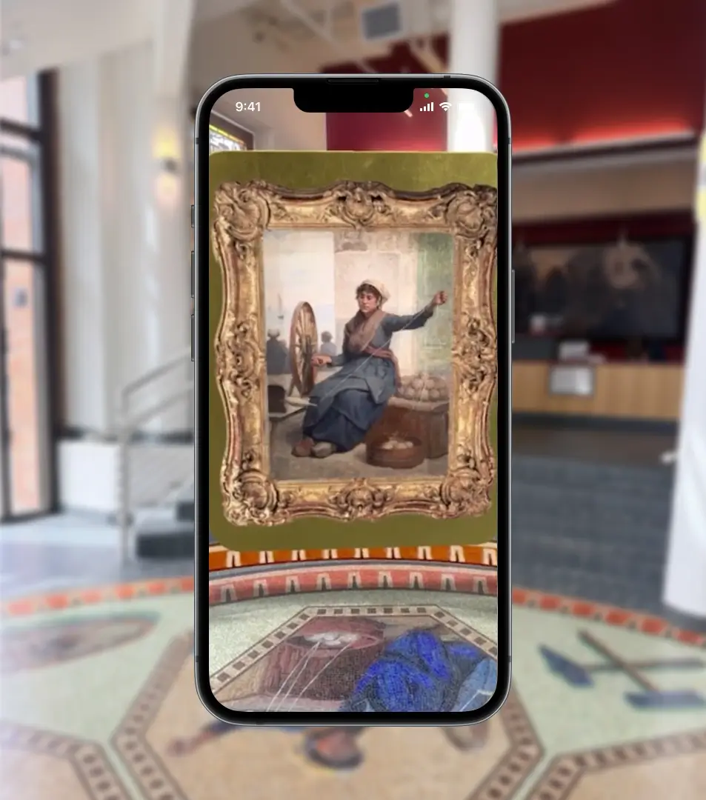
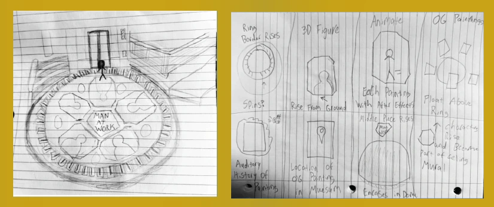
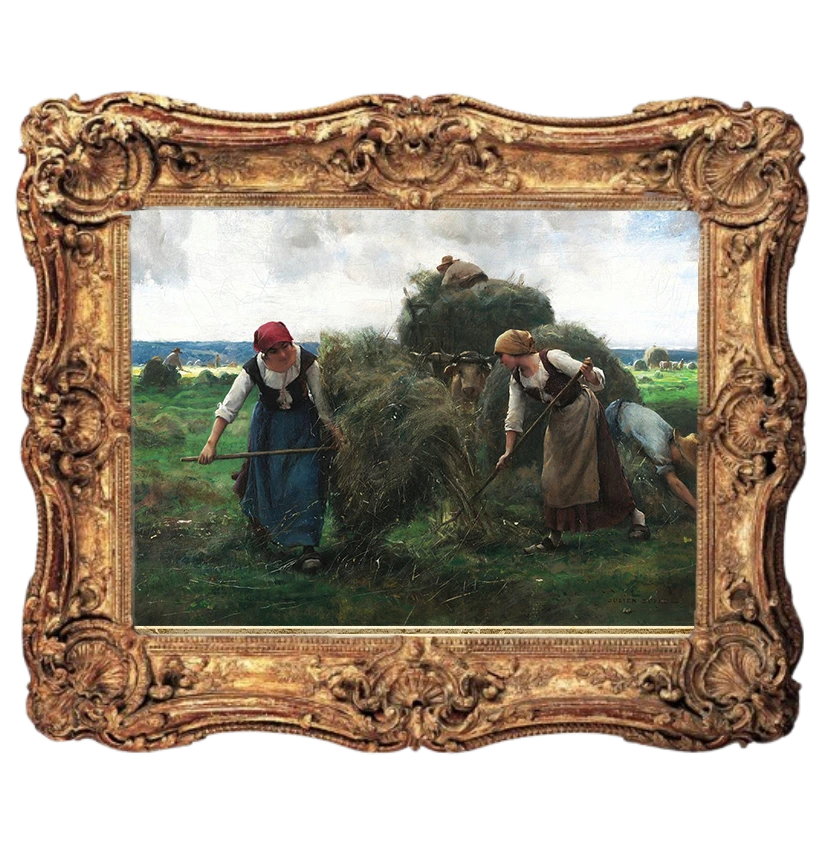
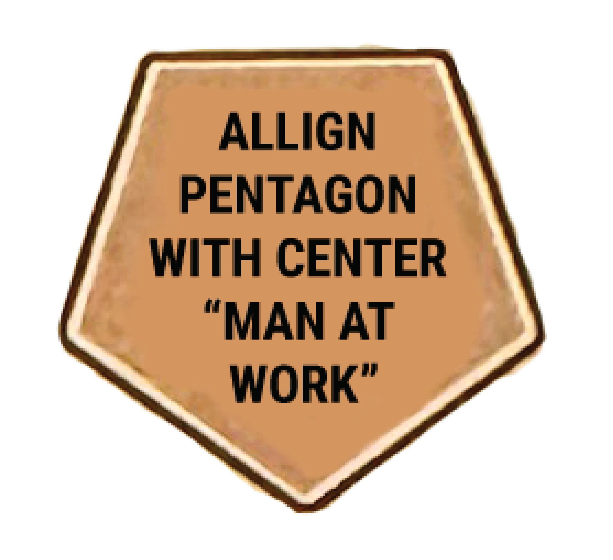
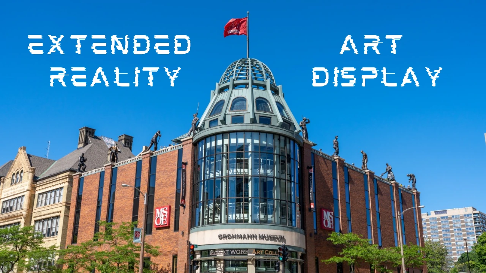

Milwaukee School of Engineering
Grohmann Museum's Extended Reality Mosiac Art Exhibit
Milwaukee's Grohmann Museum has a story at its entrance, but most visitors walk right over it. For my extended reality class, I was asked to improve an existing space with virtual reality elements. Never one to back down from a challenge, I wanted to create a massive interactive experience to reveal the hidden story of the Grohmann Museum's lobby floor mosaic.
A Man at Work:
Though I'd visited the museum often for classes, I hadn't known the story behind many of the art pieces I walked past each day.
I started my project by researching the space and learned that the mosaic contained redrawn figures from the museum's Man At Work collection.
This made it the perfect piece to highlight and
encourage further exploration inside the museum for visitors.
With my mind made up, I worked inside the museum and carefully redrew the space for reference later, along with various sketches of my ideas.

A sketch of the space, and my “Crazy Eights” exercise, which I used to organize my brainstorming and force myself to generate a large number of ideas in a short period of time.

I used Photoshop to create 3D assets like this one of Julien Dupré's The Hay Harvesters. When a visitor tapped the piece, it would display information about the art's location in the museum and the medium in which it was made.
From Idea to Execution:
From my sketching, I knew
I wanted to prioritize immersion and interaction in my design.
I wanted the display to be larger than life so visitors would be surrounded by floating assets that slowly circled them.
Because the figures in the mosaic were based on real artwork from the museum,
I made 3D assets with museum locations and details about the art.
By compiling this information, I hoped to create a scavenger hunt for visitors,
where they could search for the art highlighted by the mosaic.
I assembled the assets in
Adobe Aero,
then set up animations to rotate the art and reveal its information when the user tapped the painting.
As a final touch, I added sound effects that matched the atmosphere of each piece.
Iteration From User Feedback:
With my prototype completed, I conducted
two usability tests
with students that were frequent visitors of the space.
Through this research, I documented a major pain point in my interaction:
both testers were unable to properly set up the exhibit
without external intervention.
Further questioning revealed visitors were confused during onboarding
due to a lack of setup instructions.
As a result, testers placed the 3D assets out of alignment with their
mosaic counterparts muddled the connections of the interactive art peice to the greater museum.
To resolve the problem, I created a 2D asset that guided users through setup. I also
reduced cognitive load during onboarding
by hiding all assets unrelated to startup.
Further testing showed that these changes successfully addressed the usability issue
and helped users begin the experience with less confusion.

This was one of the onboarding assets I created; users would line up the exhibit's center with an identical 2D asset, which would hover just above the ground.

While the exhibit never went public due to the technology being shut down, you can still view a walkthrough on my Youtube channel.
Museum Reception and Project Impact:
The project was well received by both my professor and the Grohmann Museum staff,
who asked to feature it in the museum's entryway for visitors to explore and interact with.
Unfortunately, shortly after the project was completed, Adobe discontinued support for Adobe Aero.
As a result, the piece was never displayed as originally intended.
Nonetheless, several MSOE students were able to experience it prior to deletion, and the project still
succeeded in its goal of
educating viewers and immersing them in the museum's rich history.